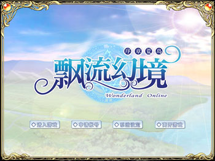
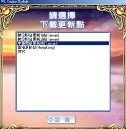
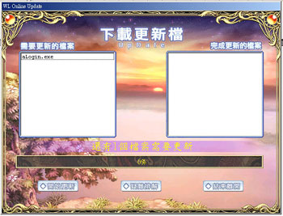
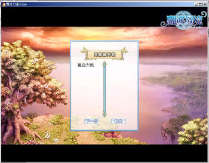

游戏运行
| 1.安装完成后，请玩家执行桌面上「WLOnline」快捷方式启动游戏。 |
| 2.在Windows操作系统中，以鼠标左键选择「开始」→「程序」→「Chinesegamer」→「WLOnline」→「WLOnline」，就可以执行游戏。 |
| 3.玩家完成并执行游戏后，画面上会打开一个游戏选单，游戏选单里包含『进入游戏』、『申请账号』、『系统设定』、『离开游戏』四种选项。 |
|
 |
| 4.请先点选『申请账号』，就会出现飘流幻境官网，点选『会员专区』即可连接至账号申请中心。 |
| 5.玩家请先详细阅读使用者公约，按下「同意」的按钮以进行账号的申请。 |
| 6.接下来会请玩家输入您会员账号和密码，然后按『确定』。如果玩家尚未成为会员，请先点选画面上的「加入会员」来进行申请。 |
| 7.请玩家依照画面指示填写画面上需要输入数据的空白字段，并再次输入会员账号和密码。 |
| 8.此时会出现玩家的游戏账号和密码，这是玩家在进入游戏时需要用到的账号和密码『请玩家妥善保存』，否则之后将无法进入游戏。 |
|
 |
| 9.关闭上一个窗口后，会再出现游戏选单，此时玩家即可点选『进入游戏』，就会出现『下载更新点』的画面，玩家选择好后，就可以按下『确定』键。 |
|
 |
| 10.接下来游戏画面会出现『下载更新档』，如果游戏需要更新档案的话，请选择『开始更新』；如果不需要，请直接选择『开始执行游戏』，接着画面会出现使用合约书，在选择『同意』之后，就可以看到游戏最近的更新公告，关闭之后即可进入游戏。 |
|
 |
| 11.选择服务器，再输入完游戏账号密码之后就可以选择喜爱的人物��。（即之前请玩家妥善保存的账号和密码） |